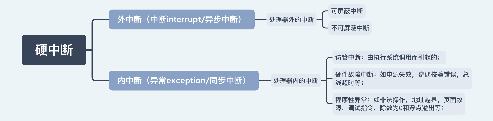
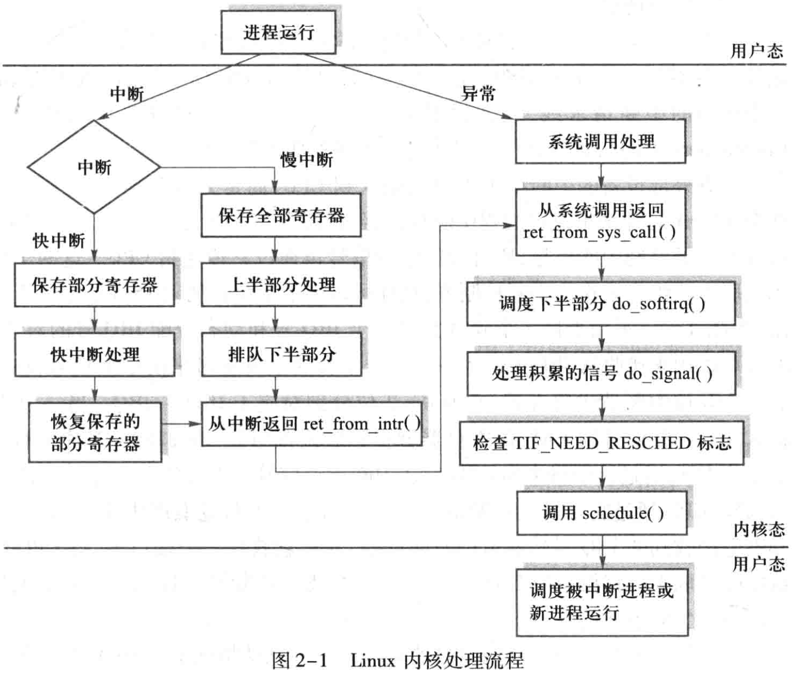
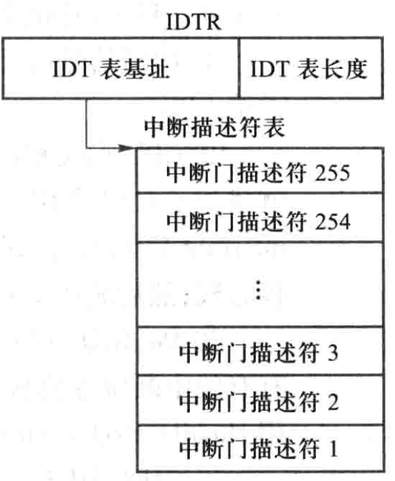
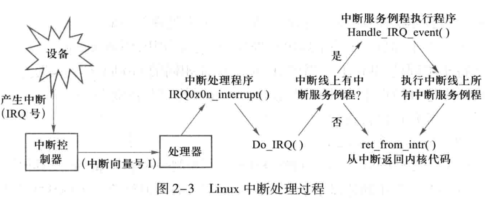

<!DOCTYPE html>
<html>
<head><meta name="generator" content="Hexo 3.8.0">
  <!-- hexo-inject:begin --><!-- hexo-inject:end --><meta charset="utf-8">
  

  
  <title>OS--处理器管理（2）_中断技术 | DongXuehui&#39;s Blog</title>
  <meta name="viewport" content="width=device-width, initial-scale=1, maximum-scale=1">
  <meta name="description" content="OS—处理器管理(2)_中断技术知识要点：  中断概念 中断源分类 中断和异常的响应及服务 中断事件处理原则 中断优先级和多重中断 Linux中断处理（自学）  中断概念每当应用程序执行系统调用时要求获得系统服务，I/O设备报告传输情况，或者产生各种内部外部事件时，都要通过中断机制产生中断信号并启动操作系统内核工作。操作系统是由“中断驱动”的。 中断（interrupt）指在程序执行过程中遇到急需">
<meta name="keywords" content="操作系统">
<meta property="og:type" content="article">
<meta property="og:title" content="OS--处理器管理（2）_中断技术">
<meta property="og:url" content="http://dongxh.cn/2020/03/30/OS-处理器管理（1）-中断技术/index.html">
<meta property="og:site_name" content="DongXuehui&#39;s Blog">
<meta property="og:description" content="OS—处理器管理(2)_中断技术知识要点：  中断概念 中断源分类 中断和异常的响应及服务 中断事件处理原则 中断优先级和多重中断 Linux中断处理（自学）  中断概念每当应用程序执行系统调用时要求获得系统服务，I/O设备报告传输情况，或者产生各种内部外部事件时，都要通过中断机制产生中断信号并启动操作系统内核工作。操作系统是由“中断驱动”的。 中断（interrupt）指在程序执行过程中遇到急需">
<meta property="og:locale" content="zh-CN">
<meta property="og:image" content="http://dongxh.cn/2020/03/30/OS-处理器管理（1）-中断技术/1.png">
<meta property="og:image" content="http://dongxh.cn/2020/03/30/OS-处理器管理（1）-中断技术/2.png">
<meta property="og:image" content="http://dongxh.cn/2020/03/30/OS-处理器管理（1）-中断技术/3.png">
<meta property="og:image" content="http://dongxh.cn/2020/03/30/OS-处理器管理（1）-中断技术/4.png">
<meta property="og:image" content="http://dongxh.cn/2020/03/30/OS-处理器管理（1）-中断技术/5.png">
<meta property="og:updated_time" content="2020-04-04T04:51:10.052Z">
<meta name="twitter:card" content="summary">
<meta name="twitter:title" content="OS--处理器管理（2）_中断技术">
<meta name="twitter:description" content="OS—处理器管理(2)_中断技术知识要点：  中断概念 中断源分类 中断和异常的响应及服务 中断事件处理原则 中断优先级和多重中断 Linux中断处理（自学）  中断概念每当应用程序执行系统调用时要求获得系统服务，I/O设备报告传输情况，或者产生各种内部外部事件时，都要通过中断机制产生中断信号并启动操作系统内核工作。操作系统是由“中断驱动”的。 中断（interrupt）指在程序执行过程中遇到急需">
<meta name="twitter:image" content="http://dongxh.cn/2020/03/30/OS-处理器管理（1）-中断技术/1.png">
  
    <link rel="alternate" href="/atom.xml" title="DongXuehui&#39;s Blog" type="application/atom+xml">
  
  
    <link rel="icon" href="/favicon.png">
  
  
    <link href="//fonts.googleapis.com/css?family=Source+Code+Pro" rel="stylesheet" type="text/css">
  
  <link rel="stylesheet" href="/css/style.css"><!-- hexo-inject:begin --><!-- hexo-inject:end -->
</head>
</html>
<body>
  <!-- hexo-inject:begin --><!-- hexo-inject:end --><div id="container">
    <div id="wrap">
      <header id="header">
  <div id="banner"></div>
  <div id="header-outer" class="outer">
    <div id="header-title" class="inner">
      <h1 id="logo-wrap">
        <a href="/" id="logo">DongXuehui&#39;s Blog</a>
      </h1>
      
    </div>
    <div id="header-inner" class="inner">
      <nav id="main-nav">
        <a id="main-nav-toggle" class="nav-icon"></a>
        
          <a class="main-nav-link" href="/">Home</a>
        
          <a class="main-nav-link" href="/archives">Archives</a>
        
      </nav>
      <nav id="sub-nav">
        
          <a id="nav-rss-link" class="nav-icon" href="/atom.xml" title="RSS Feed"></a>
        
        <a id="nav-search-btn" class="nav-icon" title="搜索"></a>
      </nav>
      <div id="search-form-wrap">
        <form action="//google.com/search" method="get" accept-charset="UTF-8" class="search-form"><input type="search" name="q" class="search-form-input" placeholder="Search"><button type="submit" class="search-form-submit">&#xF002;</button><input type="hidden" name="sitesearch" value="http://dongxh.cn"></form>
      </div>
    </div>
  </div>
</header>
      <div class="outer">
        <section id="main"><article id="post-OS-处理器管理（1）-中断技术" class="article article-type-post" itemscope itemprop="blogPost">
  <div class="article-meta">
    <a href="/2020/03/30/OS-处理器管理（1）-中断技术/" class="article-date">
  <time datetime="2020-03-30T14:40:52.000Z" itemprop="datePublished">2020-03-30</time>
</a>
    
  <div class="article-category">
    <a class="article-category-link" href="/categories/Operating-System/">Operating System</a>
  </div>

  </div>
  <div class="article-inner">
    
    
      <header class="article-header">
        
  
    <h1 class="article-title" itemprop="name">
      OS--处理器管理（2）_中断技术
    </h1>
  

      </header>
    
    <div class="article-entry" itemprop="articleBody">
      
        <h1 id="OS—处理器管理-2-中断技术"><a href="#OS—处理器管理-2-中断技术" class="headerlink" title="OS—处理器管理(2)_中断技术"></a>OS—处理器管理(2)_中断技术</h1><p>知识要点：</p>
<ul>
<li>中断概念</li>
<li>中断源分类</li>
<li>中断和异常的响应及服务</li>
<li>中断事件处理原则</li>
<li>中断优先级和多重中断</li>
<li>Linux中断处理（自学）</li>
</ul>
<h3 id="中断概念"><a href="#中断概念" class="headerlink" title="中断概念"></a>中断概念</h3><p>每当应用程序执行系统调用时要求获得系统服务，I/O设备报告传输情况，或者产生各种内部外部事件时，都要通过中断机制产生中断信号并启动操作系统内核工作。<strong>操作系统是由“中断驱动”的。</strong></p>
<p><strong>中断（interrupt）</strong>指在程序执行过程中遇到急需处理的事件时，暂时中止现行程序在CPU上的运行，转而执行相应的事处理程序，待处理完成后再返回断点或者调度其他程序执行的过程。</p>
<p><strong>共性</strong>：即中断装置能够改变处理器内操作的执行顺序。</p>
<p><strong>中断系统</strong>：</p>
<ul>
<li>中断装置：指发现中断，响应中断的硬件<ul>
<li>发现中断源，提出中断请求；</li>
<li>保护现场 ；</li>
<li>启动处理中断事件的程序 ；</li>
</ul>
</li>
<li>中断处理程序：由软件来完成<ul>
<li>主要任务是处理中断事件和恢复正常操作 ；</li>
</ul>
</li>
</ul>
<h3 id="中断源分类"><a href="#中断源分类" class="headerlink" title="中断源分类"></a>中断源分类</h3><p></p>
<p>外中断：各个中断具有不同的中断优先级，表示事件的紧急程度，在处理高一级的中断时，往往会屏蔽部分或者全部的低级中断。</p>
<p>内中断：不能被屏蔽，一旦出现应立即予以响应并进行处理。</p>
<p>​        外中断和内中断组合形成完整的中断体系，由于产生原因和处理方法差别越来越大，所以把中断和异常区分开来：</p>
<div class="table-container">
<table>
<thead>
<tr>
<th>中断</th>
<th>异常</th>
</tr>
</thead>
<tbody>
<tr>
<td>由与当前运行程序无关的中断信号触发，CPU对中断的响应是被动的，无论CPU处于什么状态，都需要处理外部设备发来的中断请求</td>
<td>由CPU控制单元产生，允许指令在执行期间响应异常，大部分异常发生在用户态，而内核态唯一发生的异常是‘缺页异常’</td>
</tr>
<tr>
<td>要求中断被快速处理，以便及时响应其他中断信号，所以中断处理程序处理过程中是不能被阻塞的</td>
<td>异常处于被打断的当前进程上下文中，所提供的服务是当前进程所需要的，异常处理程序处理过程中是可以被阻塞的</td>
</tr>
<tr>
<td>中断允许发生嵌套</td>
<td>异常大多为一重</td>
</tr>
<tr>
<td>中断处理过程中决不会被异常打断</td>
<td>异常处理过程中可能会产生中断</td>
</tr>
</tbody>
</table>
</div>
<h3 id="中断和异常的响应及服务"><a href="#中断和异常的响应及服务" class="headerlink" title="中断和异常的响应及服务"></a>中断和异常的响应及服务</h3><p>无论中断还是异常，CPU的响应过程基本上是一致的，即在执行完当前指令后，根据中断源所提供的“中断向量”，在内核中找到相应的中断服务例程并调度执行。</p>
<p>1.中断向量由硬件或者操作系统预先分配和设置；2.系统调用对应的向量则在访管指令中给出；3.异常向量在CPU的硬件结构预先规定；</p>
<p>发现中断源并产生中断的硬件称为<strong>中断控制器</strong>，包括中断逻辑线路和中断寄存器。再看异常，它是执行指令时，由于指令本身的原因发生的，指令的控制逻辑和实现线路一旦发现异常便转向内核的异常处理程序。</p>
<p>中断/异常的响应需要顺序做四件事：</p>
<p></p>
<h3 id="中断事件处理原则"><a href="#中断事件处理原则" class="headerlink" title="中断事件处理原则"></a>中断事件处理原则</h3><p><strong>硬件故障处理</strong>：需要人工干预</p>
<p><strong>程序性中断</strong>：一是语法错误，由编译程序发现并报错；二是逻辑错误，由测试程序发现；三是程序运行过程中产生异常。</p>
<p><strong>I/O中断</strong></p>
<p>I/O中断的处理原则如下：</p>
<ol>
<li>I/O操作正常结束。把等待传输的下一个进程设置为就绪态，让它占据设备或者通道并启动数据传输。</li>
<li>I/O操作发生故障。先向设备发命令索取状态字，分析产生故障的确切原因，再进行复执或者请求人工干预。</li>
<li>I/O操作发生异常。分析情况采取相应的措施，向操作员报告。</li>
<li>设备报到或者设备结束。表示有设备接入可供使用或者设备断开暂停使用，操作系统应该修改系统数据结构中相应的设备状态。</li>
</ol>
<p><strong>访管中断</strong></p>
<p>由程序执行访管指令而引起的，表示当前运行程序对操作系统功能的调用，可看做机器指令的一种扩充。</p>
<p>访管指令包括操作码和访管参数两部分，前者表示此指令是访管指令，后者表示具体的访管要求。</p>
<p>。。。</p>
<p><strong>时钟中断</strong></p>
<p>​        时钟是操作系统进行调度工作的重要工具。比如让分时进程作时间片轮转；让实时进程定时发出或接收控制信号；系统定时唤醒或阻塞一个进程；对用户进程进行记账。</p>
<p>​        时钟可分成绝对时钟和间隔时钟两种。</p>
<p>​        有了硬件定时器，Linux就可以统计用户的记账信息，它记录了进程的创建时间以及进程在生命周期占用的CPU时间，每个时钟滴答到来时，核心都修改当前进程在内核态和用户态占用的时间。</p>
<p>​        Linux系统运行不同的间隔定时器，类型有三种：</p>
<ul>
<li>real间隔定时器：按实际经过时间计时，不管进程处在何种模式下运行，包括进程被挂起时，计时总在进行，定时到达时发送给进程一个SIGALRM信号。</li>
<li>virtual间隔定时器：进程在用户态下执行时才计时，定时到达时发送给进程一个SIGVTALRM信号。</li>
<li>profile间隔定时器：进程执行在用户态或核心态时都计时，当定时到达时发送给进程一个SIGROF信号。</li>
</ul>
<h3 id="中断优先级和多重中断"><a href="#中断优先级和多重中断" class="headerlink" title="中断优先级和多重中断"></a>中断优先级和多重中断</h3><p><strong>中断优先级</strong></p>
<p>有硬件方法和软件方法实现：硬件方法，根据排定的优先级顺序做一个硬件链式排队器，当产生高一级中断事件时，应该屏蔽比它优先级低的所有中断源；软件方法，编写一个查询程序，根据优先级顺序从高到低进行查询，一旦发现有中断请求便转入相应的中断时间处理程序的入口。</p>
<p><strong>中断屏蔽</strong></p>
<p>可由CPU通过指令编写中断控制器的屏蔽码来实现。</p>
<p>中断屏蔽是指禁止CPU相应中断或者禁止中断产生。</p>
<p>作用是：</p>
<ol>
<li>延迟或禁止某些中断的响应。系统程序执行过程中，不希望产生干扰事件，以免共享数据结构受到破坏。程序运行过程中产生某些事件认为是正常的，不必加以处理。</li>
<li>协调中断响应与中断处理的关系。确保高优先级中断可以打断低优先级中断，反之却不能。</li>
<li>防止同级中断相互干扰。在处理某优先级中断事件时，必须屏蔽该级中断，以免造成混乱。</li>
</ol>
<p><strong>多重中断事件处理</strong></p>
<p>中断正在进行处理期间，CPU又响应新的中断事件，于是暂时停止正在运行的中断处理程序，转去执行新的中断处理程序，就叫多重中断（又称中断嵌套）。</p>
<p>对同一优先级的不同中断：采用顺序处理 方法。</p>
<p>对不同优先级的中断，采用以下处理方法：1.串行处理；2.嵌套处理，还要规定最大嵌套重数；3.即时处理，在运行中断处理程序时，如果出现程序性中断事件，在一般情况下，表明此时中断处理程序有异常，应对其立即响应并进行处理</p>
<h3 id="Linux中断处理"><a href="#Linux中断处理" class="headerlink" title="Linux中断处理"></a>Linux中断处理</h3><p></p>
<h5 id="Linux中断机制"><a href="#Linux中断机制" class="headerlink" title="Linux中断机制"></a><strong>Linux中断机制</strong></h5><p><strong>中断向量</strong>：对中断信号编码，每个中断信号的编码称为其对应的中断向量；</p>
<p>中断请求：每个能发送中断信号的硬件设备控制器都有一根控制线，与中断控制器相连接，若是硬件欲向CPU发送                   中断信号必须申请一条可用的中断请求线，或者说一个IRQ号，这就是中断请求（Interrupt                                                 Requirement，IRQ）。</p>
<p><strong>中断描述符表</strong>：Linux中断机制在保护模式下采用中断描述符表（Interrupt Descriptor Table,IDT）实现，此表包                          含256个表项，每个中断/异常都对应一个表项，每个表项称为一个门描述符（gate descriptor）,                          作用是把程序控制权转交给中断/异常处理程序。门的含义是，当中断/异常发生时必须先通过这                          道门，才能进入中断/异常处理程序。</p>
<p></p>
<p><strong>中断请求队列</strong>：</p>
<ol>
<li>中断处理程序和中断服务例程</li>
<li>中断处理程序的执行</li>
</ol>
<p>中断共享的数据结构为irqaction。</p>
<p><strong>中断处理程序的执行</strong></p>
<h5 id="Linux下半部分处理"><a href="#Linux下半部分处理" class="headerlink" title="Linux下半部分处理"></a>Linux下半部分处理</h5><p>中断处理程序的特点是：以异步方式运行，有可能打断关键代码的执行，甚至打断处理程序的执行；运行时屏蔽中断，最坏的情况会屏蔽所有中断；要操作硬件，对时限要求很高；在中断上下文运行，故不能被阻塞。总之，需要中断处理程序执行的越快越好，因为<strong>缩短屏蔽中断的时间对于系统的响应能力和性能都至关重要</strong>。</p>
<p></p>
<h5 id="Linux的三种任务延迟机制"><a href="#Linux的三种任务延迟机制" class="headerlink" title="Linux的三种任务延迟机制"></a>Linux的三种任务延迟机制</h5><ol>
<li>小任务（tasklet）</li>
<li>工作队列（work queue）</li>
<li>软中断（softirq）</li>
</ol>

      
    </div>
    <footer class="article-footer">
      <a data-url="http://dongxh.cn/2020/03/30/OS-处理器管理（1）-中断技术/" data-id="ck9mjdp0m001f1glke1sedrdb" class="article-share-link">Share</a>
      
      
  <ul class="article-tag-list"><li class="article-tag-list-item"><a class="article-tag-list-link" href="/tags/操作系统/">操作系统</a></li></ul>

    </footer>
  </div>
  
    
<nav id="article-nav">
  
    <a href="/2020/04/02/OS-处理器管理（3）-进程及其实现/" id="article-nav-newer" class="article-nav-link-wrap">
      <strong class="article-nav-caption">Newer</strong>
      <div class="article-nav-title">
        
          OS--处理器管理（3）_进程及其实现
        
      </div>
    </a>
  
  
    <a href="/2020/03/28/OS-处理器管理（1）-处理器状态/" id="article-nav-older" class="article-nav-link-wrap">
      <strong class="article-nav-caption">Older</strong>
      <div class="article-nav-title">OS--处理器管理（1）_处理器状态</div>
    </a>
  
</nav>

  
</article>

</section>
        
          <aside id="sidebar">
  
    
  <div class="widget-wrap">
    <h3 class="widget-title">分类</h3>
    <div class="widget">
      <ul class="category-list"><li class="category-list-item"><a class="category-list-link" href="/categories/Digital-Image-Process/">Digital Image Process</a></li><li class="category-list-item"><a class="category-list-link" href="/categories/Linux/">Linux</a></li><li class="category-list-item"><a class="category-list-link" href="/categories/Operating-System/">Operating System</a></li><li class="category-list-item"><a class="category-list-link" href="/categories/life-record/">life record</a></li><li class="category-list-item"><a class="category-list-link" href="/categories/linear-algebra/">linear algebra</a></li></ul>
    </div>
  </div>


  
    
  <div class="widget-wrap">
    <h3 class="widget-title">标签</h3>
    <div class="widget">
      <ul class="tag-list"><li class="tag-list-item"><a class="tag-list-link" href="/tags/life-record/">life record</a></li><li class="tag-list-item"><a class="tag-list-link" href="/tags/linear-algebra/">linear algebra</a></li><li class="tag-list-item"><a class="tag-list-link" href="/tags/linux/">linux</a></li><li class="tag-list-item"><a class="tag-list-link" href="/tags/操作系统/">操作系统</a></li><li class="tag-list-item"><a class="tag-list-link" href="/tags/数字图像处理/">数字图像处理</a></li></ul>
    </div>
  </div>


  
    
  <div class="widget-wrap">
    <h3 class="widget-title">标签云</h3>
    <div class="widget tagcloud">
      <a href="/tags/life-record/" style="font-size: 10px;">life record</a> <a href="/tags/linear-algebra/" style="font-size: 10px;">linear algebra</a> <a href="/tags/linux/" style="font-size: 13.33px;">linux</a> <a href="/tags/操作系统/" style="font-size: 20px;">操作系统</a> <a href="/tags/数字图像处理/" style="font-size: 16.67px;">数字图像处理</a>
    </div>
  </div>

  
    
  <div class="widget-wrap">
    <h3 class="widget-title">归档</h3>
    <div class="widget">
      <ul class="archive-list"><li class="archive-list-item"><a class="archive-list-link" href="/archives/2020/04/">四月 2020</a></li><li class="archive-list-item"><a class="archive-list-link" href="/archives/2020/03/">三月 2020</a></li><li class="archive-list-item"><a class="archive-list-link" href="/archives/2019/08/">八月 2019</a></li><li class="archive-list-item"><a class="archive-list-link" href="/archives/2019/03/">三月 2019</a></li></ul>
    </div>
  </div>


  
    
  <div class="widget-wrap">
    <h3 class="widget-title">最新文章</h3>
    <div class="widget">
      <ul>
        
          <li>
            <a href="/2020/04/30/OS-同步、通信与死锁（1）-并发进程/">OS--同步、通信与死锁（1）_并发进程</a>
          </li>
        
          <li>
            <a href="/2020/04/23/OS-处理器管理（5）-处理器调度/">OS--处理器管理（5）_处理器调度</a>
          </li>
        
          <li>
            <a href="/2020/04/03/OS-处理器管理（4）-线程及其实现/">OS--处理器管理（4）_线程及其实现</a>
          </li>
        
          <li>
            <a href="/2020/04/02/OS-处理器管理（3）-进程及其实现/">OS--处理器管理（3）_进程及其实现</a>
          </li>
        
          <li>
            <a href="/2020/03/30/OS-处理器管理（1）-中断技术/">OS--处理器管理（2）_中断技术</a>
          </li>
        
      </ul>
    </div>
  </div>

  
</aside>
        
      </div>
      <footer id="footer">
  
  <div class="outer">
    <div id="footer-info" class="inner">
      &copy; 2020 dwyane_dongxh<br>
      Powered by <a href="http://hexo.io/" target="_blank">Hexo</a>
    </div>
  </div>
</footer>
    </div>
    <nav id="mobile-nav">
  
    <a href="/" class="mobile-nav-link">Home</a>
  
    <a href="/archives" class="mobile-nav-link">Archives</a>
  
</nav>
    

<script src="//ajax.googleapis.com/ajax/libs/jquery/2.0.3/jquery.min.js"></script>


  <link rel="stylesheet" href="/fancybox/jquery.fancybox.css">
  <script src="/fancybox/jquery.fancybox.pack.js"></script>


<script src="/js/script.js"></script>


  </div><!-- hexo-inject:begin --><!-- hexo-inject:end -->
</body>
</html>